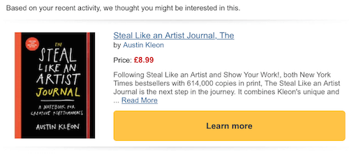

如何设计最诚实且懂用户的UI（上）
原著 | Graeme Fulton
翻译 | 谢晓聪
现如今许多App，类似Google Now,Spotify以及Amazon等，通过用户的使用数据来对用户的偏好进行假设判断。他们甚至可以利用这些关键的数据信息且不需要我们进行任何操作来替我们做出有效判断和决定。例如，Facebook会经过筛选推送符合你要求的新闻内容，Amazon会推荐你潜在会感兴趣的产品—这两个例子都在说明同一个事实：他们在帮你做筛选，隐藏和你无关的选项，展示他们认为你可能会喜欢的选项。
这是一种设计模式，在用户选择被移除后，出现了一种“用户预期设计”的方法论。他的目标是通过利用用户行为数据来自动进行决策并呈现出来结果。作为结果大大减少了用户对于当下过多决策的频率以及疲劳度，提升了整体的决策体验。
在今天的线上世界中，消费者面临的是比以往更多的选择。比如，像Amazon或是Ebay这样的购物网站。哪怕我们已经知道我们想要是什么了，选择还是会铺天盖地的朝我们袭来。
另一个例子就数音乐服务类的Spotify了，他会给出大量的音乐选择在我们的指尖旁。
选择多种多样当然是受欢迎的，但太多的选择会让用户产生一种畏惧的体验，从而导致用户做一项选择时显得尤为困难。这个理论在之前是被广泛强调过的，尤其是Barry Shwatz's提出的选择悖论和Hick定律：
Barry Shwatz's提出的选择悖论：
“大量的选择会使人们失去对做选择的快感以及意愿。”
Hick定律：
“任何额外的选择会增加用户的时间决策成本。”
关于“选择的疲劳”文章中也支持了这一观点，进行大量的选择决策会造成人们在关键问题的决策上降低效率。这也是为什么Mark Zuckerberg每天都穿相同的衣服了：
“我真的想让我的生活变得更为简单有效，所以我尽可能的减少我生活中做决策的机会，然然而把关键的决策注意力都集中在工作的服务上。”
我们需要为用户减少大量的选择，因此，成了许多现如今APP的一个重点话题，而我们今天要讨论如下两点：
许多的产品都变得更定制化来满足个人偏好，有限的几个选择只在与用户有关联的需求中出现，这方面做的尤为出色的就是Amazon了，精选过的邮件推荐基于用户的使用数据来作为参考：

关联推荐机制也许还不足以解决减少决策的麻烦，因为用户仍然要面对许许多多的关联性选择。那么这里产品可以更进一步的根据用户的行为来先做决策，完全剔除掉用户端决策的负担。
例如，Google Now越来越多的为用户执行决策，在用户无任何输入的前提下：
Google Now在后台为用户做了大量的决策，从找停车场到搜索球赛比分，甚至能在合适的时间通知你，都不需要你主动要求。
Spotify展示了用户预期决策的另一层品质，在用户思考前就建立好播放列表，这正如他们的宣传公告一样：
“每周都像最懂你的好朋友一样为你准备好一份定制的混合歌曲集。”
寻找新的歌曲的任务以及决定添加哪个专辑到播放列表都提早为用户准备好，这种决策方式被称为“用户预期性设计”。
在减少选择和决策的过程中，会有指责的声音出现，他们认为这种预期设计并非符合用户想要的结果，甚至会产生不信任感。尤其是当一些app已经暴露一些违背用户意愿的商业行为后，欺骗用户去选择他们本不愿意去做的事情。
因此，一个应用程序为用户提供的决策数量越多，越是应该做到透明，以保持与用户之前的信任。这样可以避免一些违背用户意愿的决策，保持用户的知情与控制权是用户预期设计需要重视的。
当更多用户有可能感兴趣的选项被筛选出来的时候，那么接下来我们应该着手于让用户看到更多的同类型内容推荐：
这是让用户发现更多新事物的技巧。这个技巧已被证明不仅仅适用于像亚马逊这样的电商网站，同样也适用于像Facebook这种社交类的媒体网站：
Facebook希望给那些有大量点击链接的用户提供更多的相关链接。给予喜欢看视频的用户提供更多的视频备选选项。
很多用户可能并不是特别满意这么做，因为他们不希望被决定他们该看什么内容。相反，Joel Spolsky,Stack Overflow的CEO，指责Facebook刻意隐藏信息：
Facebook并没有展示所有的post内容出来，而是选择性的给用户浏览。那么这样一来就存在一个问题，Facebook的算法对用户先入为主的影响程度到底有多大？
避免限制信息的一种方法是通过反馈机制使用户更容易改进关于它们的假设。这有几种不同的做法，从显而易见的到比较隐蔽的做法：
对于以上三个例子，Google提供了相对更透明的反馈机制，给出多种明确的引导，确保用户能掌控自己想看的内容：
可以通过卡片右上角的“更多”按钮来进入定制化设置，改变阅读的内容方向。
这也是避免Joel Spolsky所提到的对用户不公正推送的解决方案。